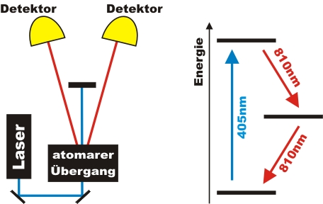
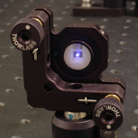
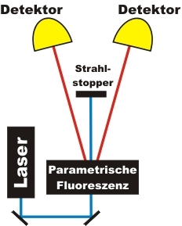

Grundlagen Kapitel 2:
Angekündigte Einzelphotonenquelle
Im letzten Kapitel wurde ausführlich gezeigt, dass mit einem abgeschwächten Laser keine einzelnen Photonen generiert werden können. In diesem Kapitel wird die sogenannte angekündigte Einzelphotonenquelle vorgestellt, die zu einem bestimmten Zeitpunkt immer genau ein einzelnes Photon aussendet.
Erzeugung einzelner Photonen über Photonenpaare:
Die einfachste Methode um einzelne Photonen zu erzeugen wäre ein Atom, das auf Knopfdruck genau ein Photon emittiert. Eine solche atomare Einzelphotonenquelle gibt es noch nicht. Eine Annäherung an die Einzelphotonenquelle ist die Atomkaskade. Bei einer Atomkaskade werden aufgrund der inneren Struktur bestimmter Atome immer genau zwei Photonen gleichzeitig emittiert. Die Registrierung des einen Photons wird als Zeitsignal genutzt (Triggersignal), wann das andere Photon ankommen muss. Das zweite Photon wird somit durch das Triggersignal angekündigt. Experimentell kann der atomare Übergang mit einer Kaskade in der Elektronenhülle von Calcium Atomen realisiert werden (Abb. 1) [Gra86].

Abb. 1: Erzeugung von Photonenpaaren über eine Atomkaskade.
Registrierung durch zwei Detektoren
Photonenpaare durch parametrische Fluoreszenz:
Aufgrund des hohen experimentellen Aufwandes bei Atomkaskaden verwenden wir bei unseren Experimenten als Alternative den Prozess der parametrischen Fluoreszenz [Kle68]. Dieser Prozess wird heute weltweit in allen quantenoptischen Laboren verwendet. Die beiden Photonen werden bei diesem Prozess in einem nichtlinearen Kristall (Abb. 2) unter Energie- und Impulserhaltung erzeugt. Die Wellenlänge des Lasers zur Anregung beträgt 405nm - die beiden Zwillingsphotonen haben eine Wellenlänge von jeweils 810nm (Abb. 3).

Abb. 2: Nichtlinearer Kristall (5mm breit)
mit 405nm Laserlicht
Wir haben hiermit eine Quelle aufgebaut, die einzelne Photonen ankündigt. Ein Photon wird als Trigger benutzt, mit dem anderen Photon wird das eigentliche Experiment durchgeführt. Die Zeitachse im Experiment wird durch eine Ereignisachse (Triggerereignisse) ersetzt: Immer wenn der Trigger Detektor etwas registriert, könnte auf der anderen Seite ein Photon vorhanden sein. Wenn gleichzeitig auf beiden Seiten innerhalb eines Koinzidenzzeitintervalls von 2-5ns zwei Ereignisse registriert wurden, dann waren auf beiden Seiten genau ein Photon vorhanden. Ein Photon wird von dem anderen Photon angekündigt. Das Koinzidenzexperiment wird im Abschnitt Aufbau Schritt für Schritt auf dem optischen Tisch aufgebaut. Die erläuterte Koinzidenzmethode mit zwei Detektoren wird im Abschnitt Koinzidenz experimentell durchgeführt. Die angekündigte Einzelphotonenquelle ist die Grundlage für alle unserer Experimente. Mit dem Experiment ist allerdings noch nicht die Existenz des Photons als unteilbare Portion bewiesen.

Abb. 3: Erzeugung von Photonenpaaren über die Parametrische Fluoreszenz
Zum Kapitel 3: Grundlagen: Polarisation und Strahlteiler [klick]
Zurück zur Übersicht [klick]
Autor: P. Bronner, April 2008